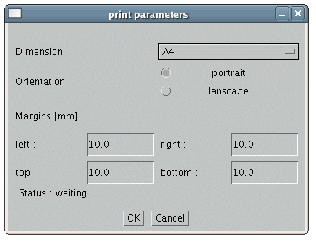
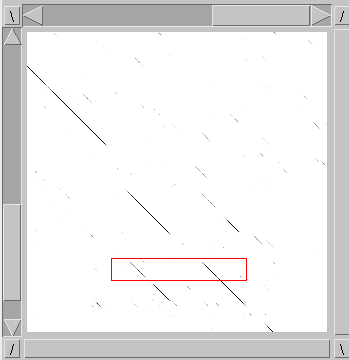
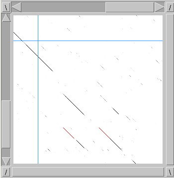
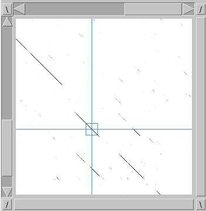
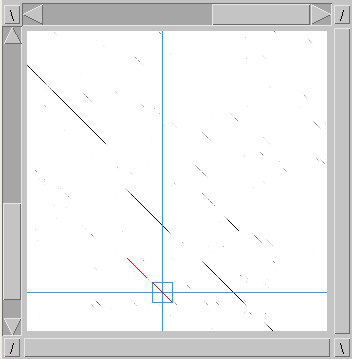
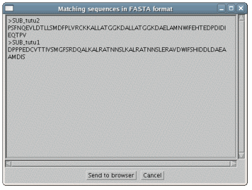

New features of Dotlet 1.5
4 new features were implemented in Dotlet version 1.5.
-
A "print" button (opening a print dialog) has been added, allowing the user to print
the plot (as well as important informations) in a WYSIWYG way and to receive it as a pdf file.
Figure 1: print dialog showing available options
|

|
-
When mouse-selecting+SHIFT an area of the dotplot, Dotlet tries to find diagonals where at least half
of the sequence is above the cutoff (as defined in the histogram). The diagonals
must be fully contained in the selected area, and are drawn in red (the whole diagonals are
considered, not the sole parts that are above cutoff). The result
is displayed in a new window, and can be sent to the browser for further use. That functionality
only works with a zoom ratio of 1:1.
Figure 2: mouse selection (left), with 2 diagonals found (right)
|

|

|
-
When mouse-moving+CTRL in the dotplot, a "magnetic cursor" helps the user to target high scores areas more precisely.
That functionality only works with a zoom ratio of 1:1.
Figure 3: magnetic cursor
|

|
-
When mouse-selecting+CTRL on a diagonal in the dotplot, Dotlet (starting from the selected point)
extends the diagonal in both directions (as long as the scores are above the cutoff,
as defined in the histogram). The result is displayed in a new window, and can be
sent to the browser for further use. By combining several clicks on different locations, one can
reconstruct a sequence. That functionality only works with a zoom ratio of 1:1.
Warning : sequence reconstruction is done in the same order as the clicks on the dotplot.
Be careful to start from left to right and top to bottom, otherwise this might lead to complete
synthetic sequences.
Figure 4: sequence reconstruction on the dotplot (left) and the result (right)
|

|

|
Last modified: Tue Nov 28, 2006